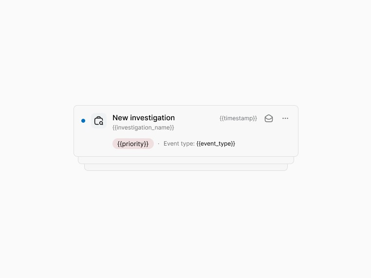
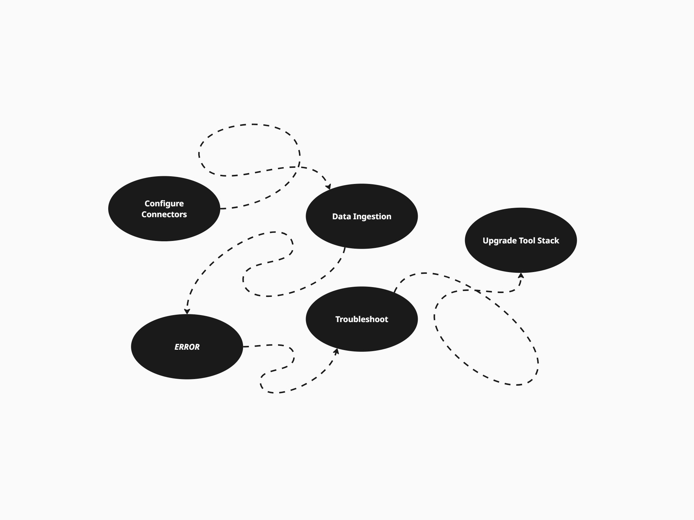
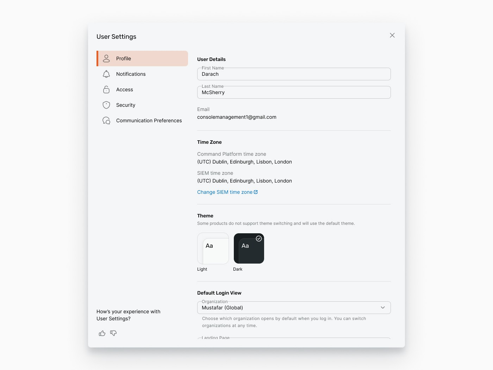

Platform Notifications
Comprehensive notification system that offers visibility of events that happen across a security platform.
View case study →UX Designer · Cyber Security · Based in Ireland
As a UX Designer in Cyber Security, I spend my time addressing the needs and problems of security professionals. Strategising solutions that help make their day to day life a little easier.

Comprehensive notification system that offers visibility of events that happen across a security platform.
View case study →
Streamlining data ingestion and asset scanning by creating a consistent data collection, management, and monitoring experience.
View case study →
A centralised hub for all user-level settings and a global navigation bar for all global resources.
View case study →A cohesive access control level system that enables granular control of features and entities across a security platform.
View case study →
Over the last four years, I have worked cross-functionally with back-end/front-end
engineers and product managers to shape the future of the cybersecurity landscape
at Rapid7. Taking on projects of all sizes, from small component design to creating
complex systems such as platform access level control, platform notifications, and
rearchitecting platform-level administration.
I've overseen initiative planning for many projects, ensuring work is planned and
prioritised to ensure what is delivered meets the needs of customers. I've managed
various migration projects that transform legacy products into modern solutions,
ensuring a seamless experience from the interim state to the end goal.
Tool stack
Leading platform unification work across notifications, user settings, data collection, administration, access level control, and integrations.
Designed log ingestion source setup for net-new cloud event sources, streamlining setup across 155 event sources, plus core components like the date picker and notification card system.
Contributed to user onboarding automation guides, the extensions marketplace redesign, and a customer leaderboard to boost discussion forum engagement.
"Darach is an outstanding UX Designer with an impressive breadth of skills that go far beyond what you'd typically expect from someone only in the industry for a few years. He has a real talent for diving into complex product flows, ripping them apart, understanding every moving piece, and then making sense of it all with clarity and purpose."
~ Lead UX Designer, Rapid7
"Darach is a great partner on projects. He was always open to compromising where needed, which is extremely helpful in keeping the ball rolling with projects. Has great attention to detail in both creating UX designs and reviewing the UI to ensure that it meets spec."
~ Senior FE Developer, Rapid7
"Darach is very approachable and will take the time to talk through any engineering concerns. His designs are always easy to follow and have plenty of comments calling out particular scenarios to make things smoother for me when developing"
~ Senior FE Engineer, Rapid7
I'm currently looking for my next role in UX design — if your team is hiring, I'd love to talk.
darachmcsherry@googlemail.com